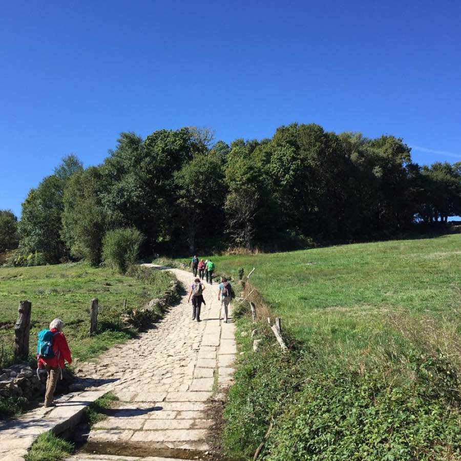

Sara · Easy Camino Santiago
Tu experta en el Camino desde Sarria
¿Te llamamos gratis?
Déjanos tu número y te llamamos en menos de 24h para asesorarte sin compromiso.
Tu número solo se usará para llamarte. Sin spam.
Tu experta en el Camino desde Sarria
Déjanos tu número y te llamamos en menos de 24h para asesorarte sin compromiso.
Tu número solo se usará para llamarte. Sin spam.
Las últimas 100km del Camino Francés. El mínimo para obtener la Compostela oficial. Perfectas para familias, viajeros con tiempo limitado y quienes hacen el Camino por primera vez. Desde 399€ · 5 o 6 etapas · Sin cargar mochila. Si aún estás organizando tu viaje, te recomendamos leer cuántos días se tarda desde Sarria hasta Santiago y qué llevar en la mochila del Camino de Santiago. Y si quieres comparar opciones antes de decidirte, también puedes ver nuestro Camino Portugués organizado.
El tramo desde Sarria hasta Santiago de Compostela es el más popular del Camino Francés. Con 115 km, supera el mínimo exigido para obtener la Compostela oficial y puede completarse en 5 o 6 etapas — perfecto para quienes disponen de una semana y quieren vivir el Camino de verdad.
Nuestra agencia está en Lugo, a solo 20 minutos de Sarria. Conocemos cada alojamiento, cada aldea, cada restaurante del trayecto. Nos encargamos de todo — reservas, traslado de mochila, credencial, asistencia — para que tú solo tengas que caminar.
Ficha de la ruta
Bosques gallegos, aldeas de piedra y la llegada a Santiago
5 etapas memorables a través de la Galicia más auténtica
La etapa de bautismo. Cruzas el río Miño por el puente largo de Portomarín, dejando atrás la ciudad de Sarria entre bosques de robles y castaños. Pasas por el monasterio de Barbadelo, uno de los más hermosos del Camino. Llegas a la bonita villa de Portomarín con sus casas de piedra y su iglesia fortaleza románica.
Etapa suave con continuas subidas y bajadas entre aldeas de piedra gris. Cruzas el alto de Ligonde con vistas espléndidas sobre la meseta gallega. La hospitalidad de los pueblos del interior de Galicia te sorprenderá. Llegas a Palas de Rei, centro neurálgico de la etapa con buen ambiente peregrino.
Una de las etapas más variadas. Cruzas el río Pambre y su castillo medieval, pasan por Melide —famosa por su pulpo a feira— y llegas a Arzúa, conocida por su queso de tetilla gallego. Aquí el ambiente peregrino se intensifica notablemente al unirse el Camino Portugués.
La penúltima etapa. Caminas por densos bosques de eucalipto y pinos que crean un ambiente casi mágico. Cruzas aldeas dormidas donde los gallos te despiertan al amanecer. En O Pedrouzo la expectativa es máxima: mañana llegas a Santiago. La emoción se palpa en cada conversación en el albergue.
El día más especial. Cruzas el Monte do Gozo —el "Monte de la Alegría"— desde donde ves por primera vez las torres de la Catedral. Entras en Santiago por el casco histórico declarado Patrimonio de la Humanidad. La Plaza del Obradoiro te espera con su abrazo al Apóstol y la Misa del Peregrino. Un momento que nunca olvidarás.
💡 Opción 6 etapas: Podemos dividir la etapa Palas de Rei → Arzúa en dos días para un ritmo más tranquilo. Ideal para familias con niños o personas con menos forma física.
115 km a través de la Galicia más auténtica
115 km · 5 etapas · todo señalizado con flechas amarillas y vieiras · © OpenStreetMap
Los principios que guían cada Camino que organizamos desde Sarria
"Que al salir a caminar, el peregrino ya no tenga que pensar en la mochila ni en dónde dormir. Que toda la energía y la atención vayan al Camino."
"Alojamientos con carácter, bien ubicados en cada etapa. No hoteles de paso, sino lugares donde el cuerpo pueda recuperarse de verdad antes del día siguiente."
"Que si surge cualquier imprevisto en el camino — una lesión, un cambio de plan — haya alguien disponible al otro lado del teléfono para resolverlo."
Todo incluido. Elige tu tipo de alojamiento preferido.
Trabajamos con pensiones, hostales, casas rurales y pequeños hoteles seleccionados en cada etapa del Camino. Priorizamos habitación privada, baño privado, buena ubicación y descanso, siempre según disponibilidad.
✓ Precios por persona · ✓ Suplemento individual consultar · ✓ Grupos de 6+ personas: precio especial. Si quieres saber cuál es la temporada más recomendable para hacer esta ruta, revisa también nuestra guía sobre la mejor época para hacer el Camino de Santiago.
Reserva con solo el 30%. Resto 30 días antes de la salida. Cancelación gratuita hasta 21 días antes.

Trabajamos con pensiones, hostales, casas rurales y pequeños hoteles en cada etapa del Camino. Priorizamos habitación privada, descanso real, buena ubicación y baño privado según disponibilidad. Nada de albergues de literas si no es lo que buscas.
Todo lo que necesitas saber antes de hacer el Camino desde Sarria
El Camino desde Sarria es ideal si buscas una experiencia auténtica en pocos días, con la Compostela al final. Es accesible para la mayoría de personas con una forma física básica.
✓ Perfecta para ti si…
✗ Puede que prefieras otra ruta si…
Terreno
Preparación recomendada
Caminar 30–60 minutos al día durante 2–3 semanas antes de la salida es suficiente para la mayoría de personas. Si llevas meses sin hacer ejercicio, empieza antes. El terreno no es técnico, pero las piernas y los pies sí acusan las etapas consecutivas.
Todos los alojamientos están reservados antes de tu salida. Trabajamos con establecimientos seleccionados en cada etapa, priorizando comodidad, ubicación y descanso real.
Comidas
El desayuno está incluido. El almuerzo y la cena no están incluidos — a lo largo del Camino hay bares, cafeterías y restaurantes en casi todos los pueblos donde puedes comer sin problema. El menú del día ronda los 10–15 €.
Si necesitas ayuda para organizar traslados hasta Sarria o desde Santiago, consúltanos — podemos orientarte.
Cómo llegar a Sarria
Cómo volver desde Santiago
El servicio de traslado de equipaje recoge tu mochila principal en el alojamiento cada mañana y la lleva al alojamiento de la etapa siguiente. Tú caminas con solo una pequeña mochila de día, lo que hace la experiencia mucho más cómoda.
Recomendaciones de equipaje
Recibirás una lista de equipaje detallada junto al itinerario personalizado antes de la salida.
La Compostela es el certificado oficial que acredita haber completado el Camino de Santiago. Para obtenerla desde Sarria hay que cubrir los 100 km mínimos a pie y sellar correctamente la credencial.
La Credencial del Peregrino
Al llegar a Santiago
Solicita tu presupuesto personalizado gratis. Sara te llama en menos de 24h.
Pedir presupuesto gratis →O escríbenos directamente: 982 907 629